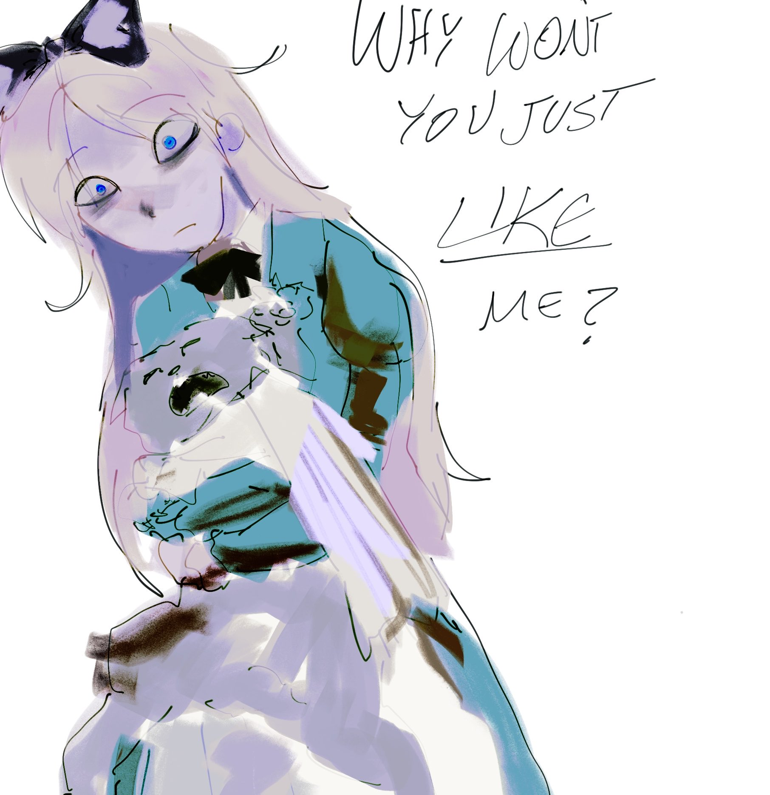

I believe, that nothing else in life hits as hard as the cold hard truth. It is insidious it is scary it just hurts..
It creeps onto you, seeping into your bones and you ignore it subconciously, and when you do acknowledge it, it's always too late, by then, you will be in pain, a different kind of pain. It resonates throughout your entire body and there's nothing you can do to quell the pain.
My mother had a habit of threatening us with all sorts of stuff, whether it's harming us in all sorts of creative ways or self harm. She loved giving us visible wounds though.
I was too young to remember, but I remember playing with a box cutter and accidentally sliced myself. My blood poured out and stained the coach, instead of a kiss and bandage, she took the box cutter and sliced my arm. I still have the scar, it is fading though.
Another time, she got drunk and cut herself in front of us, not sure what her problem was.
I had ADHD, untreated, didn't even understand what the purpose of schooling was until it was too late. One day, the lazy, arrogant and troubled Daniel got picked to be the class monitor! What an honor! We had a special tie that we *had* to wear, I forgot to wear it once, and my mother crashed out. She was yelling at me and although she didn't hit me (yet), she pointed her finger at me with so much force I was actually moving. I was mad, overwhelemd and when I got off her car and slammed the door she SCREAMED at the top of her lungs for me to get back into the goddamn car. I refused obviously and she drove away after. I thought I was safe but I was so wrong.
She had the patience to drive into the parking lot, park her car and ask every fucking student where I was just to beat the shit out of me in front of the entire school. She told everyone to laugh at me, I was broken, humiliated. No one helped, not the teachers nor the students. I've hated adults ever since. The funny part is? She denied this happened at all after telling her about it after a few years.
When I was tweleve, I had enough of her abuse and fought back. I was older and she was an old crone who drank and smoked like a pig. I overpowered her, we were both bleeding. She kicked me out promptly after.
On the streets, there were a group of dogs chasing me and were it not for my screaming that somehow scared them off I might've been mauled to death that night.
I was tired and tried sleeping on the road but some kind strangers helped me out.
When I got home, she had already filled my family's head with lies and deceits. No one has ever taken my side, heard my side of the story.
A lot of small things happened after this, I don't want to talk about it anymore, but I've now escaped her physically but I think a part of me is just, dead.
My point is, I've been alone my entire life. I didn't make my first friend until I was 14, I had basically no adult figures in my life.
The closest person I had to a father, Marko, the biggest reason why I've come so far probably doesn't value me half as much as I value him,,,, and that's ok....
What have I given him, besides being a hindrance.
My brother from another mother Carson, has treated me with nothing but kindness. Shared his wisdom to me.... but I guess the attention seeking Daniel can't accept he has a busy life outside of this haha. I really took him for granted.
My roommate, who is the biggest reason I could even escape from this twisted family already has enough on his plate, I shouldn't burden him anymore.
And finally,,,,, my bestest friend and perhaps the only person who has loved me, probably still only talks to me because she feels obligated to,,, and maybe that's fine.. I didn't deserve her at all. The prettiest woman on this planet.... Her presence lights up this dark and demented world. I would die without her.